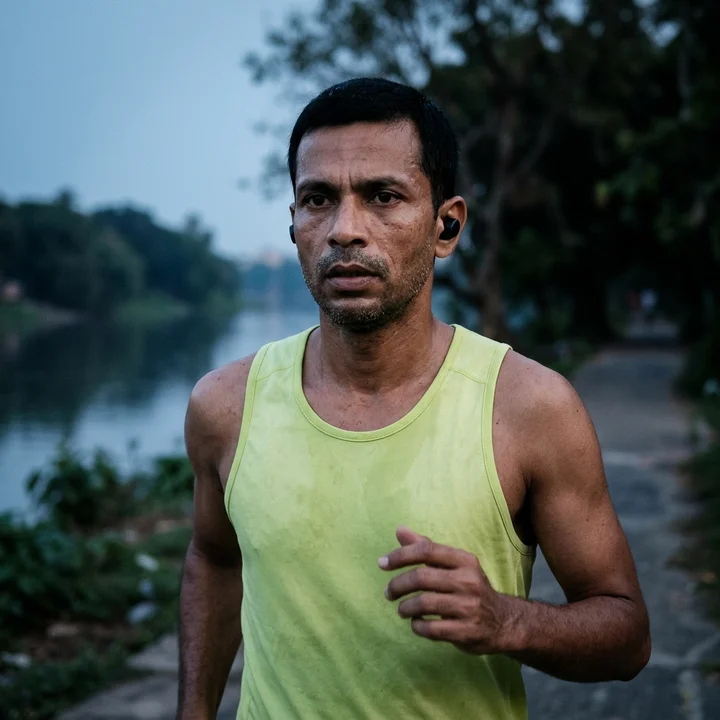
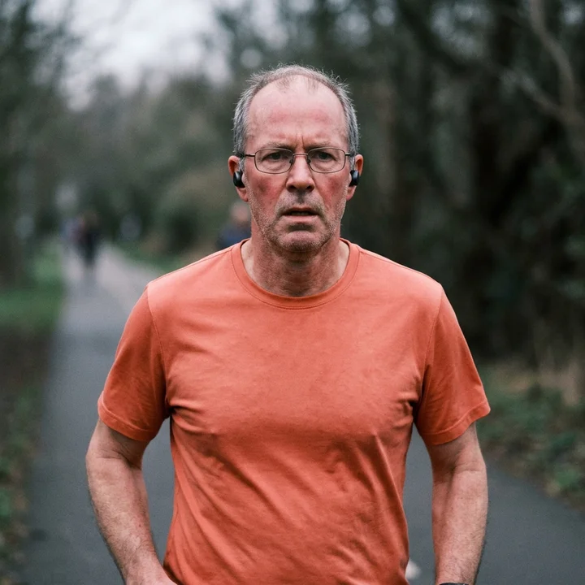

Minutes from your lungs.
Our AI transcribes every gasp into a decision. Two sharp exhales count as budget approval. A long silence assigns the action item to whoever is still moving.
Zoom for marathon runners
Split is video conferencing for marathon runners. AI turns heavy breathing into meeting minutes, breakout rooms sort by pace, and the call ends at 26.2 miles. Please plan your other calls accordingly.
open the demo →No download. Bring your own unreasonable goal.
AI meeting minutes
[heavy breathing] Budget approved.
The agenda is the distance.
Three familiar meeting problems, resolved with additional running.
Our AI transcribes every gasp into a decision. Two sharp exhales count as budget approval. A long silence assigns the action item to whoever is still moving.
Nobody at 7:30 per mile should have to hear a 10:00-per-mile opinion. Split moves attendees into pace rooms before those differences become audible.
The host can end the meeting once everyone logs 26.2 miles. Dropped connections rejoin at the same mile. We have closed the obvious loophole.
Selected participants.
All names remain in the minutes.
“We approved the annual budget at mile 19. Nobody remembers the figure, but the transcript says unanimous.”

“My old meetings ran over. Now they run exactly 26.2 miles. I appreciate a defined scope.”

“I tried to leave at mile 22. Split referred me to the commitment I made during onboarding.”
Monthly billing. The meeting itself may take longer.
$26.20 / month
A full marathon on mute.
$262 / month
For teams with a time to beat.
$2,620 / month
Your entire department, at distance.
All plan previews use sample data. No payment details required.
Your next stand-up
has a finish line.